Похождения бравой игрушки Боззо
продолжение (начало)
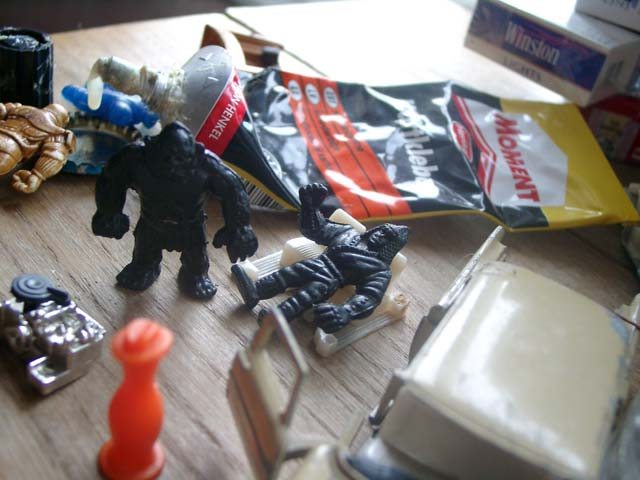
А неподалёку с растаманами, располажились самые, что ни на есть наркоманы
- о! - удивились наркоманы - ты глюк или божее провидение?
- Я Боззо - ответил Боззо и уже начал думать куда ему сматываться
- Есть два способа узнать глюк он или божее провидение - обратился сидячий наркоман
к стоящему рядом бугаю - надо его отодрать хорошенько!
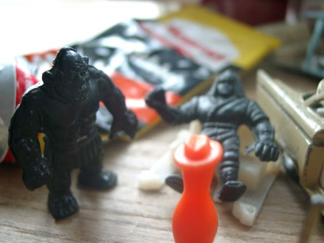
- Да у этого тощего и отдирать то нечего! - ответил бугай
- Эй, глюк неясный! Ты знаешь кто я такой?
Боззо промолчал
- Я Буль-буль! Я тебя сейчас так отделаю, что бабушка родная не узнает!
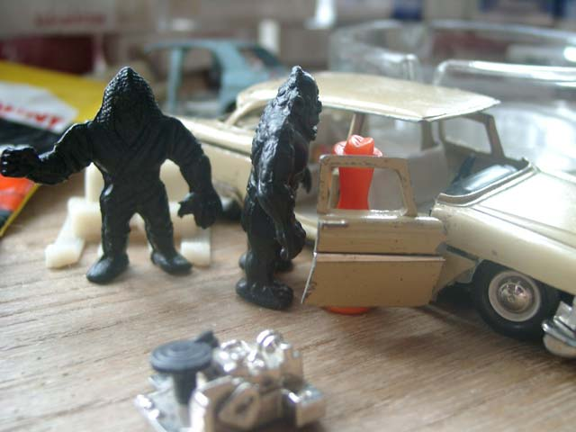
И слова Буль-Буля не расходились с делом...
Голова Боззо познакомилась с автомобильной дверью, а почки с кулаками бугая
"Сила - она в тебе" - вспомнил Боззо слова генерала
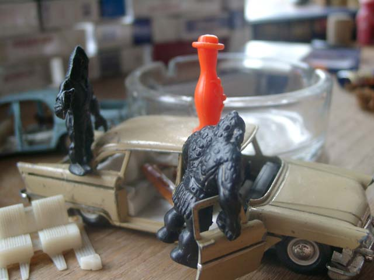
Смачно вдарив Буль-булю по челюсти, Боззо вдохновлённо бросился удирать
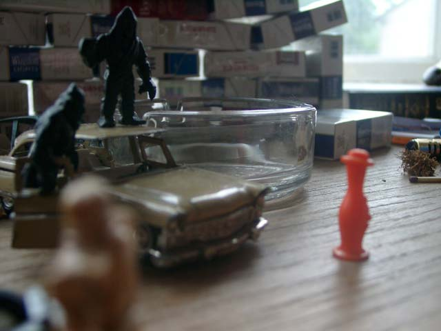
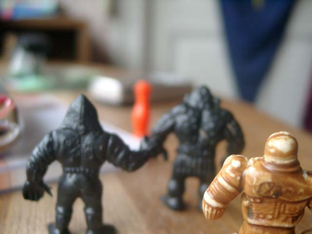
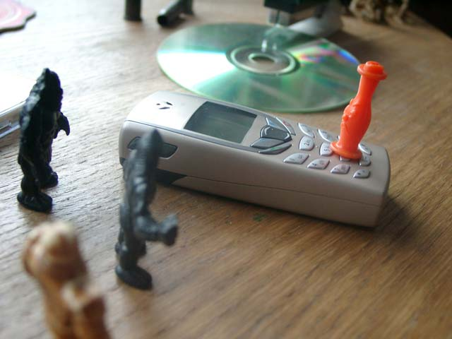
Добежав до телефона Боззо бросился звонить в полицию и кричать на помощь
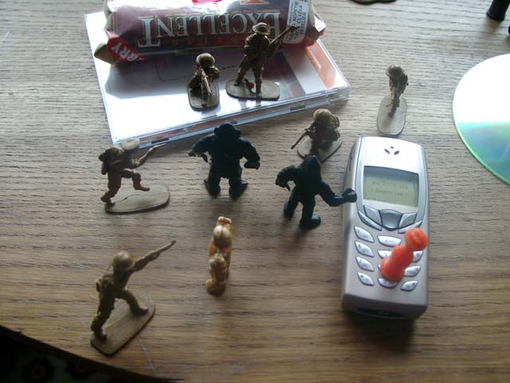
И как ни странно, полиция прибыла очень быстро.
- Ни сместа! Руки за голову!
- Предупреждаю я буду сопротивлятся! - закричал один из наркоманов
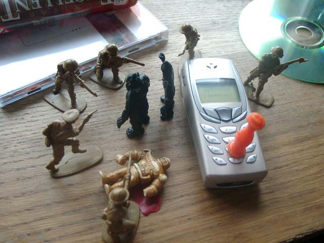
Его убили сразу.
Остальных решили взять живьём.
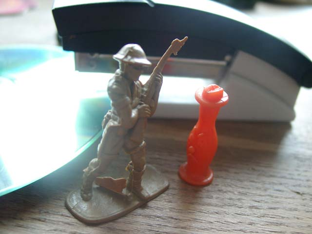
Сержант подошёл к Боззо, спросил всё ли в порядке
Потом рассказал ему, что уже давно они ищут банду наркоманов
и что он - Боззо, помог в поимке, за что залсужил бы медаль
но медали у него с собой не было, она была в участке
- Не, - ответил Боззо - Мне к бабушке надо
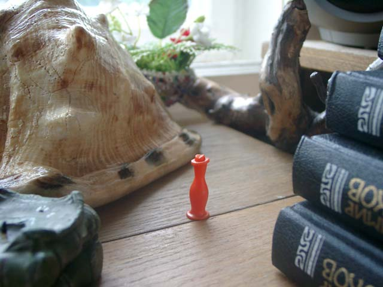
Со всей этой заморочкой Боззо заблудился.
А ведь там дома, его ждут несчастные братья
а он, на которого они возложили надежду, шляется где попало
И только слова генерала "Сила она внутри тебя" грели его уставшую душу
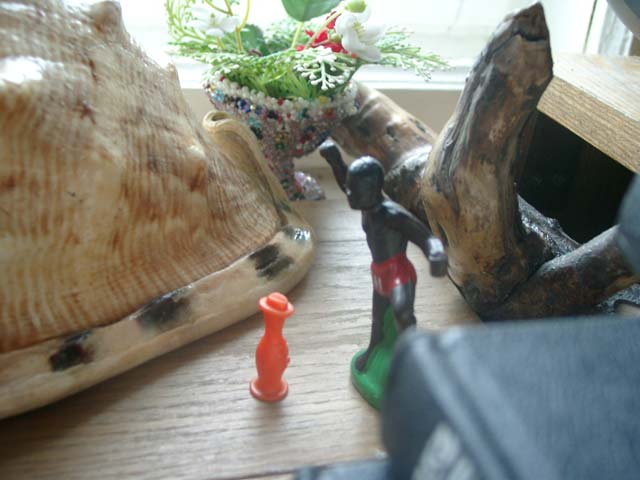
- Стой оранжевый человек! - закричал ему большой чернокожий человек
- Твою маковку! - заорал Боззо - Я уже сколько времени иду к бабушке
и мне постоянно кто-то мешает!
Большой чернокожий человек ошалел:
- Да не извини, я просто хотел тебе сказать,
что если хочешь поумнеть - спроси меня как
- Не хочу я умнеть, я хочу к бабушке!!!!!!!!
- Нет проблем, мой маленький оранжевокожий брат,
пойдём я покажу тебе катапульту
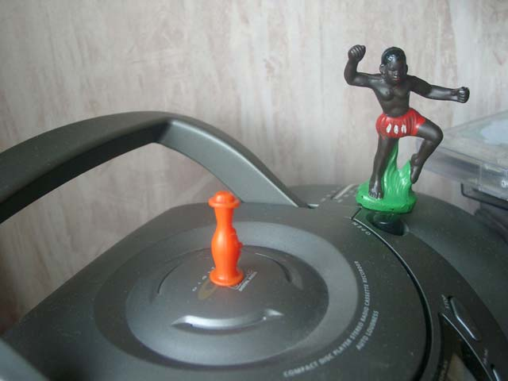
- Стой там а я сейчас кнопку нажму...
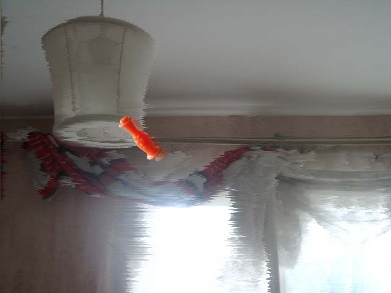
Большой чернокожий человек даже не спросил Боззо, где живёт его бабушка
ему очень нравилось смотреть как игрушки летают по всей комнате...
Дальше